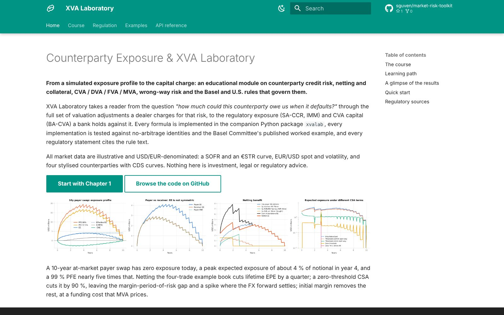
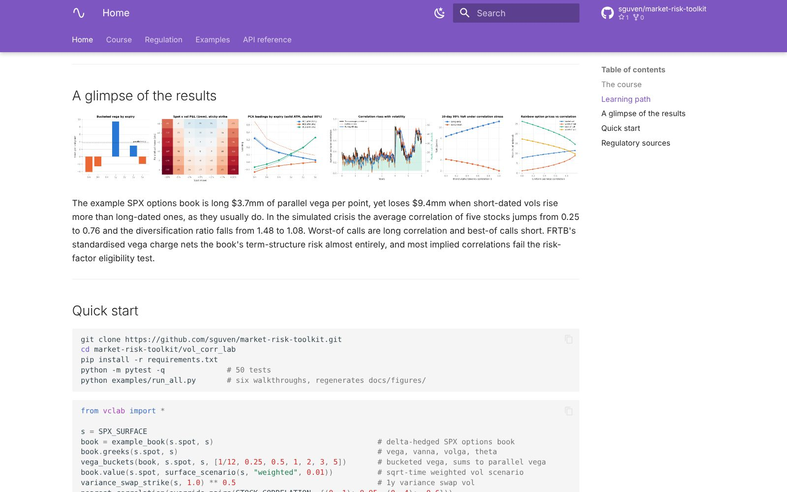
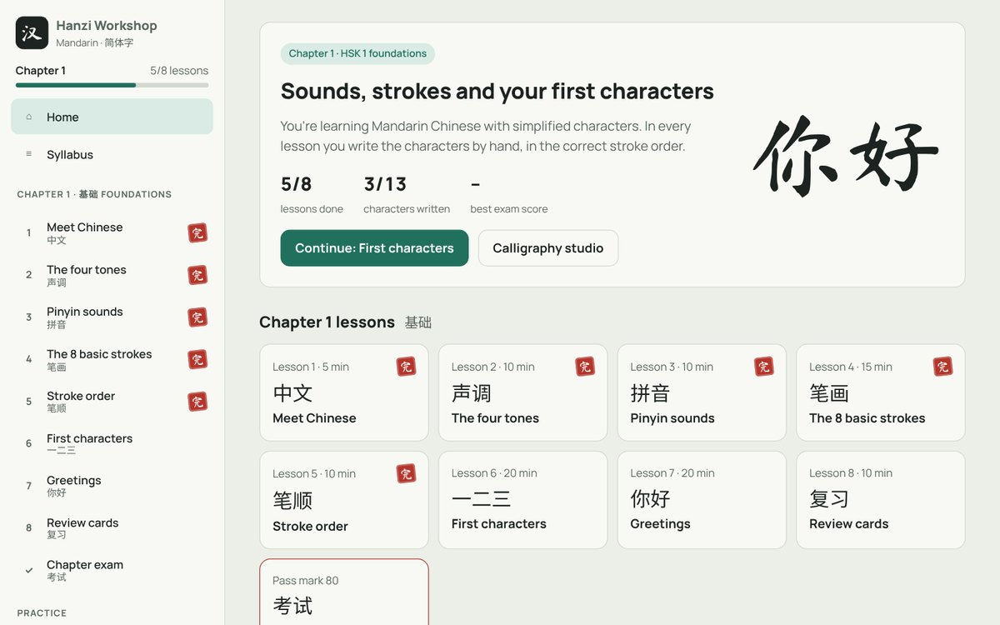

Viewed
Viewed
Black-Scholes Laboratory
From the Black-Scholes formula and the Greeks to exotic options, Monte Carlo and the FRTB capital charge on an options book.
Project portfolio
Projects I've made with AI, mostly to solve my own everyday needs: personal finance trackers, news briefs on a schedule, and a few apps I use day to day.
17 projects in 6 groups: Risk Simulations Health & Fitness Social Media Daily Briefings Personal Finance Personal Projects
Selected work
Grouped by theme, with a closer look at each.
0 of 17 viewed
Featured
01
Three online courses, each with a tested Python library behind it, that take a topic from the pricing model to the bank capital rules.
Viewed
From the Black-Scholes formula and the Greeks to exotic options, Monte Carlo and the FRTB capital charge on an options book.

ViewedCounterparty credit risk: exposure simulation, netting and collateral, CVA to KVA, wrong-way risk and SA-CCR.

ViewedVolatility and correlation risk: GARCH, the implied volatility surface, vega risk, variance swaps, correlation stress and FRTB.
02
Two everyday logging apps that live on the phone's home screen: one for meals and calories, one for workouts.
 Viewed
Viewed
Photograph or type a meal and AI estimates the calories and macros; the day adds up in a simple diary with trends and a weight log.
 Viewed
Viewed
A gym log built for entry between sets, with an AI-written program, a rest timer and a weekly view of sets per muscle, plus a coaching email every Sunday.
03
Three accounts that run on their own: AI creates each original post and a scheduler publishes it at prime time, with no manual step.
 Viewed
Viewed
Posts on its own, once a day at the prime-time hour. How it works: AI creates each original Reel (video, cover, music, caption and hashtags) and a scheduled routine publishes it, with no manual step.
 Viewed
Viewed
The same automated setup on a second account: a new original Reel goes out every day at the prime-time hour, created and published by AI with no manual step.
 Viewed
Viewed
Posts on its own every two to three days, at prime time. How it works: AI reads the news since the last post and writes one original, witty summary of what happened, then a scheduler publishes it with no manual step.
04
Scheduled AI routines that research, write and deliver a fresh issue on their own, on the web or by email.
 Viewed
Viewed
Researches the day's news, emails a full brief every evening and publishes the world section to a public site with a searchable archive.
 Viewed
Viewed
Every Wednesday, the week's notable films in theaters, with reviews, showtimes and a reason to see each one.
 Viewed
Viewed
One lesser-known Claude feature and one project that puts it to work, researched and published every day with an archive.
 Viewed
Viewed
A self-study program with a short AI-written lesson every day, readings, a film each week and weekly tests.
05
Two personal finance tools that keep the data on the device: one tracks net worth and where it is heading, the other projects the bank balance day by day.
 Viewed
Viewed
Every account in one view, with growth by period, a forecast learned from its own history, and a look inside the funds that shows which sectors carry the risk.
 Viewed
Viewed
Projects the checking balance day by day from card statements, income and recurring payments, and flags the lowest point before it happens.
06
Projects made for my own learning and for family: a Mandarin course with handwriting practice, learning games for a young child and an interactive 3D model of a small town.

ViewedA Mandarin course for learning to write characters by hand: tones, pinyin, stroke order and handwriting checked stroke by stroke, with a chapter exam that unlocks the next chapter.
 Viewed
Viewed
Bilingual learning games for a young child: numbers, colors, shapes, patterns and memory, with voice narration and rewards.
 Viewed
Viewed
A small town in Kırıkkale, Turkey, rebuilt from elevation data and satellite imagery around the 13th-century Çeşnigir Bridge.
About me
In my spare time I make small projects with AI as my coding partner. Most of them started from something I needed: keeping track of my money, getting the day's news in one place, or making learning games for a child in the family.
I enjoy the whole process, from working out the data to the small details of the interface, and I keep learning as I go.
If any of these caught your interest, I'd be glad to hear from you.